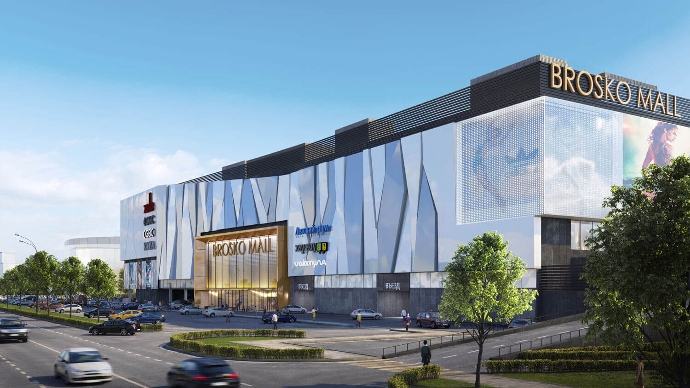

ТРК Броско Молл
ТРК Броско Молл - торгово-развлекательный комплекс в Хабаровске. Расположен на берегу реки Амур, вдоль оживлённой городской магистрали, на расстоянии 1 километра от центра города.
Некоторые объекты комплекса:
- Супермаркет «Броско Маркет». Время работы: с 09:00 до 23:00, телефон: 8 800 550-74-73;
- Кинотеатр Cinema 9 IMAX. Часы работы: будни — с 10:00 до 0:00, выходные — с 10:00 до 01:00, телефон: +7 (924) 211-46-82;
- Фудкорт. Часы работы: с 10:00 до 22:00, в нём представлены, например, «Макдоналдс», «Баскин Роббинс» и другие;
- Услуги: аптека, оптика, барбершоп, фотоуслуги, химчистка, комната матери и ребёнка, салоны связи («Связной», «Мегафон» и другие), банкоматы («Альфа-банк», «ВТБ» и другие);
- На территории комплекса есть платная подземная и бесплатная открытая парковки общей вместимостью 800 машин.